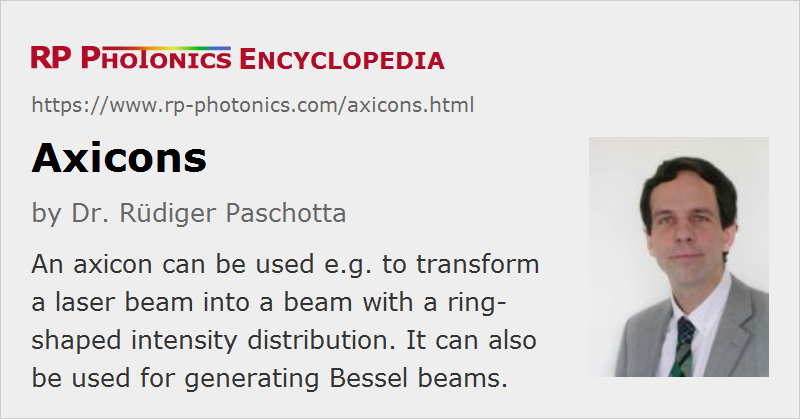

Axicons
Definition: lenses with a conical surface
German: Axicons
How to cite the article; suggest additional literature
Author: Dr. Rüdiger Paschotta
An axicon is an optical device similar to a lens, where however one has a conical rather than curved surface. Generally, one side is conical, with the tip looking outwards, and the other surface is flat (plano-convex axicon). In most cases, the transverse cross section is a circle, as for an ordinary lens. The inclination angle of the surface (called the axicon angle) does not change with increasing distance from the optical axis, while it would continuously change for an ordinary lens. Refraction thus leads to a constant ray deflection angle within a range of input ray positions.
Figure 1 shows a ray tracing simulation for an axicon with parallel incident light. For monochromatic light, for example, one of course obtains interference effects, creating a ring structure, in the region where the different contributions of reflected light overlap.
Axicons may be considered as specialty lenses (conical lenses); after all, their outer shape and the typical way of mounting is similar as for lenses. Alternatively, axicons are called conical prisms.
One often specifies the apex angle of an axicon; this is 180° minus twice the above mentioned axicon angle. Axicons with a wide range of apex angles are available as stock optics, e.g. with 90° but also with much larger angles such as 160°. In the form of custom optics, a wider range of parameters is possible.
Just as other lenses, axicons are available in uncoated forms, but are often delivered with anti-reflection coatings certain spectral regions. They can be made from various optical materials; mostly, one uses common optical glasses such as fused silica.
There are also fiber axicon lenses, where near a fiber end the fiber diameter is rapidly reduced down essentially to zero. Such fiber axicon lenses can be used for coupling light into very small waveguides of photonic integrated circuits, for example.
Applications of Axicons
For some applications, one requires a ring-shaped pattern as obtained in a sufficiently large distance after an axicon illuminated with parallel light.
A precision-polished axicon can also be used for generating an approximation of a Bessel beam – a kind of non-diffracting beam – from an ordinary input laser beam, typically a Gaussian beam. This works for the above mentioned overlap region. In that region, one obtains an annular intensity profile, as shown in Figure 2, which is based on numerical beam propagation. Figure 3 shows that for over a range of distances the beam intensity pattern stays quite similar, just as if there were no diffraction. Later on, however, the optical energy spreads out more and more.
Bessel beams are used for certain measurement purposes, for example.
Axicons are also used in various other applications, for example in the context of laser material processing, atom traps and optical tweezers, optical coherence tomography, for medical instruments in eye surgery, or as parts of certain beam expanders and telescopes.
Suppliers
The RP Photonics Buyer's Guide contains 12 suppliers for axicons. Among them:
Questions and Comments from Users
Here you can submit questions and comments. As far as they get accepted by the author, they will appear above this paragraph together with the author’s answer. The author will decide on acceptance based on certain criteria. Essentially, the issue must be of sufficiently broad interest.
Please do not enter personal data here; we would otherwise delete it soon. (See also our privacy declaration.) If you wish to receive personal feedback or consultancy from the author, please contact him e.g. via e-mail.
By submitting the information, you give your consent to the potential publication of your inputs on our website according to our rules. (If you later retract your consent, we will delete those inputs.) As your inputs are first reviewed by the author, they may be published with some delay.
See also: lenses, prisms
and other articles in the category general optics
|  |
If you like this page, please share the link with your friends and colleagues, e.g. via social media:
These sharing buttons are implemented in a privacy-friendly way!